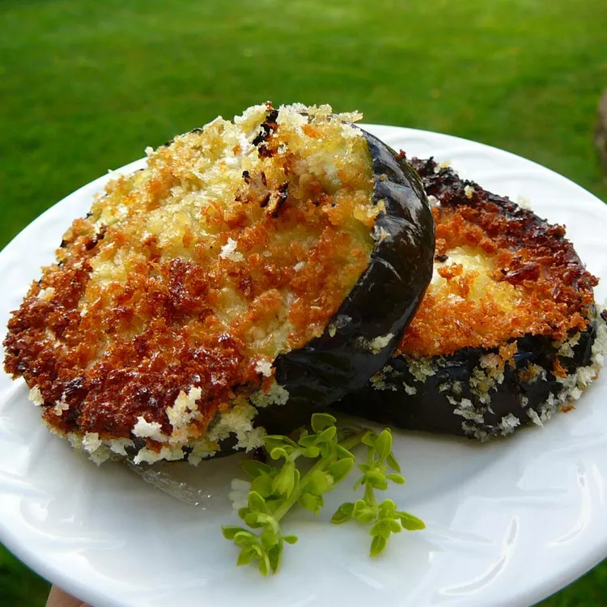

Easy Fried Eggplant recipe

Description
While Jews in Italy don't eat a lot of latkes, they do have many versions of fried eggplant, including ones especially for Hanukkah. Layer these golden fried slices with tomato sauce and mozzarella, or serve as is for a delicious side.
Ingredients
- 2 tablespoons canola oil
- 1 large eggplant, peeled and sliced
- 3 eggs, beaten
- 2 cups dry bread crumbs
Directions to make this recipe
- Warm oil in a large skillet over medium-high heat.
- Dip eggplant slices in egg, then coat with breadcrumbs.
- Place breaded eggplant in the hot oil and fry until golden brown, 2 to 3 minutes per side. Drain on paper towels.
Go back